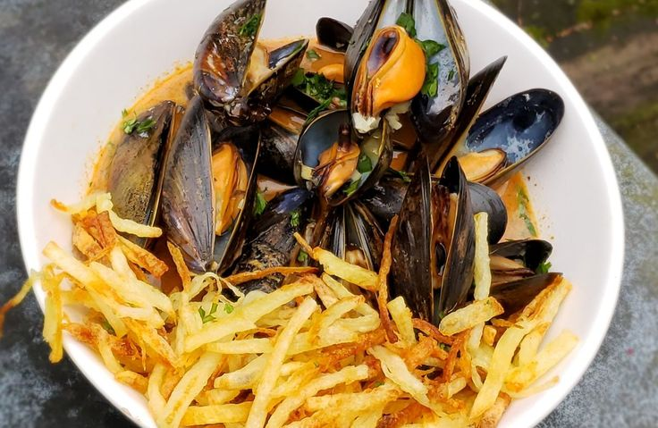

Moules-frites (Belgique) – Moules cuites à la marinière accompagnées de frites croustillantes 🍽
Ingrédients :
- 1 kg de moules
- 500 g de pommes de terre
- 2 échalotes finement hachées
- 2 gousses d’ail écrasées
- 1 bouquet de persil frais haché
- 250 ml de vin blanc sec
- 50 g de beurre
- Huile pour la friture
- Sel et poivre au goût
Instructions :
- 1. Nettoyer les moules sous l’eau froide et retirer les impuretés.
- 2. Faire fondre le beurre dans une grande casserole et y faire revenir l’échalote et l’ail.
- 3. Ajouter les moules, verser le vin blanc et couvrir. Cuire à feu vif pendant environ 5 minutes.
- 4. Secouer la casserole pour répartir la chaleur et s’assurer que toutes les moules s’ouvrent.
- 5. Éplucher et couper les pommes de terre en frites. Les faire frire dans de l’huile chaude jusqu’à ce qu’elles soient dorées.
- 6. Servir les moules avec le jus de cuisson et accompagner de frites croustillantes.